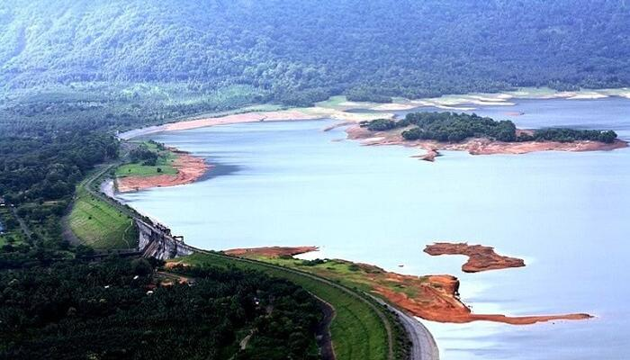

Nelliampathy
If you see the mist floating in the air and a pleasant aroma of coffee teasing your nostrils, a chain of majestic mountains peaking from all around and a wonderful weather relaxing your nerves, then you are not dreaming, you are in a small beautiful hill station of Kerala known as Nelliyampathy.

Silent Valley National Park
The Silent Valley National Park, with its lush green forests and beautiful views of the rich flora and fauna, is a popular destination for nature as well as wildlife lovers all across the globe.The Silent Valley National Park is located in the Kundali Hills of the Western Ghats in Kerala in southern India.

Malampuzha Dam
One of the largest reservoirs of Kerala, Malampuzha Dam is located near Palakkad in South India. It is surrounded by the Western Ghats on all side.The dam is 355 feet high and crosses the Malampuzha River, which is a tributary of Bharathappuzha, which is Kerala's second largest river. The dam has many attractions nearby like the rock garden, ropeway, amusement park and visitors often enjoy boating here as well.

Mannarkkad
Mannarkkad (also known as Mannarghat) is a small town in Palakkad town district of Kerala state, south India. It is the head quarters of Mannarkkad Taluk. It is situated at a distance of 40 km from the district head quarters, at the north east end of the district, on the way to Kozhikkode(NH213) and on the foots of Western Ghats
